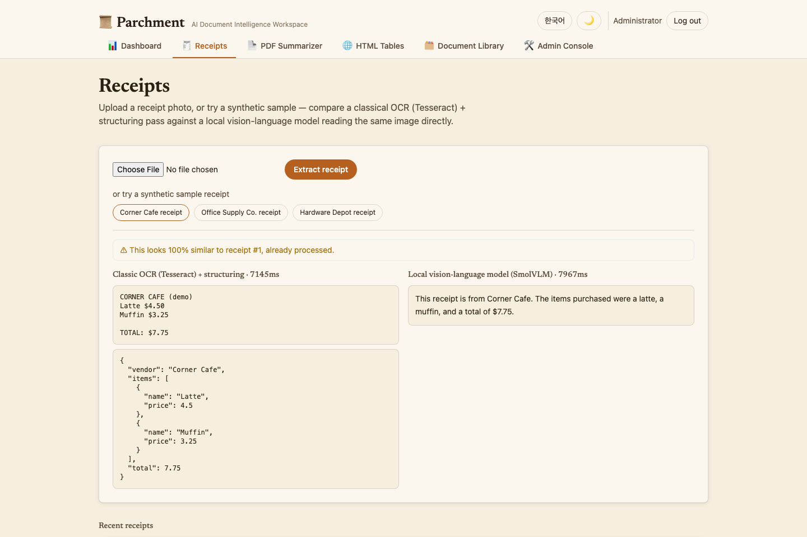
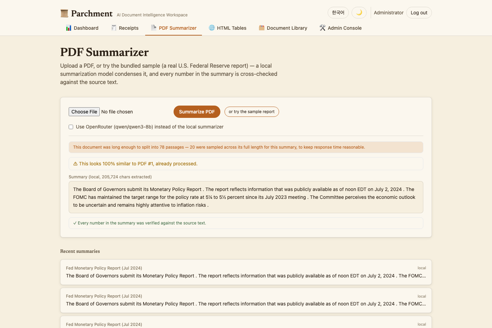
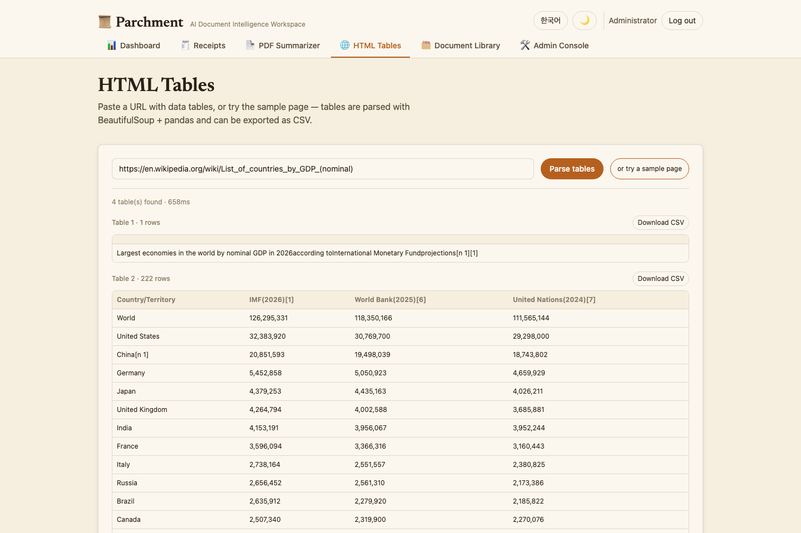
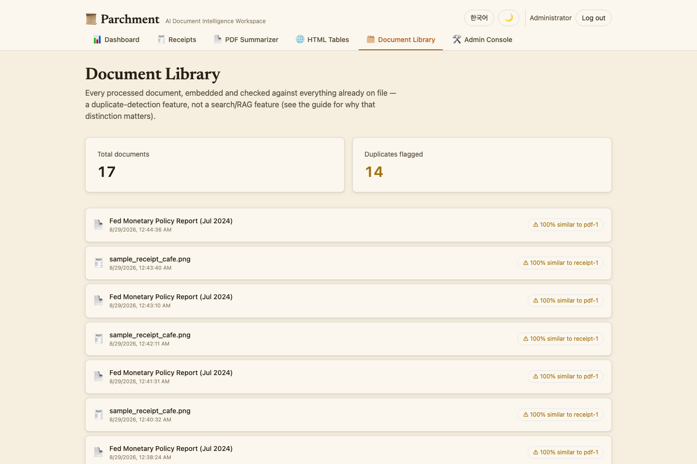
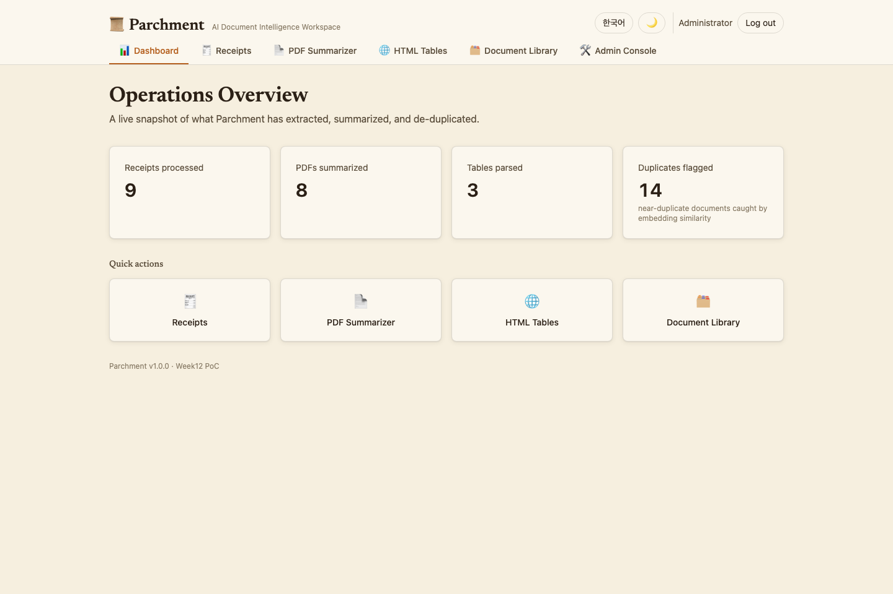
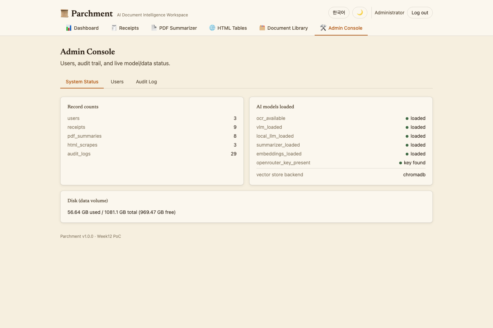
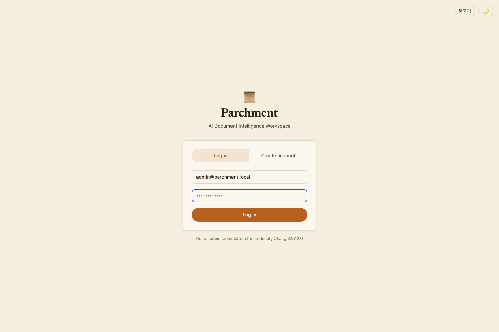

Week3 PoC · AI 문서 인텔리전스 워크스페이스AI Document Intelligence Workspace
Parchment
Parchment는 Week3에서 다루는 세 가지 축 — 이미지/멀티모달 정보추출, PDF 파싱 및 요약, HTML 표 스크래핑 — 를 "영수증·보고서·웹 표를 받아 구조화하고 중복을 걸러내는" 하나의 백오피스 워크플로로 통합한 PoC입니다. Parchment combines Week3's three pillars — image/multimodal extraction, PDF parsing + summarization, and HTML table scraping — into one back-office workflow: receipts, reports, and web tables all become clean, de-duplicated records.
로컬 5개 + 옵션 클라우드 1개5 local + 1 optional cloud
TypeScript · Vite · Tailwind
Docker Compose, 자동 포트탐색auto port-detect
6개 AI 모델The six AI models
| 모델Model | 역할Role | 위치Location |
|---|---|---|
| Tesseract (LSTM OCR) | 고전 이미지→텍스트Classic image-to-text | local |
HuggingFaceTB/SmolVLM-256M-Instruct | 로컬 비전-언어 모델Local vision-language model | local |
Qwen/Qwen2.5-0.5B-Instruct | OCR 텍스트 구조화OCR-text structuring | local |
sshleifer/distilbart-cnn-12-6 | PDF 요약PDF summarization | local |
sentence-transformers/all-MiniLM-L6-v2 | 중복 문서 탐지 임베딩Duplicate-detection embeddings | local |
qwen/qwen3-8b (OpenRouter)(via OpenRouter) | 요약 품질 업그레이드Summarization upgrade | cloud, opt-in |
다섯 개의 로컬 모델이 기본 경로이며 API 키 없이 항상 동작합니다. OpenRouter 경로는 사용자가 명시적으로 선택할 때만 사용되며, 이번 빌드에서 실제 키로 검증했습니다 — Week1·2 PoC가 이미 쓰고 있는 "로컬 기본, 클라우드는 선택적 업그레이드" 하이브리드 패턴을 그대로 따릅니다.
The five local models are always the default path and work with zero API keys. The OpenRouter path is a strictly user-toggled upgrade, validated with a real key during this build — following the same "local default, cloud opt-in" hybrid pattern already used by the Week1/2 PoCs.
UI 차별화UI Differentiation
Week1 PoC("CommerceIQ")와 Week2 PoC("VoxIQ")는 tailwind.config.js와 index.css가 100% 동일했습니다 — 같은 시스템 폰트, 같은 파란색 액센트, 같은 좌측 사이드바+카드 레이아웃. 이번 요청("UI가 좀 달라지도록")에 따라 Parchment는 스택은 유지하되 시각 언어를 의도적으로 새로 설계했습니다.The Week1 PoC ("CommerceIQ") and Week2 PoC ("VoxIQ") turned out to share an identical tailwind.config.js and index.css — the same system font, the same blue accent, the same sidebar+card layout. Per this round's explicit request for a different look, Parchment keeps the same stack but deliberately redesigns the visual language.
| Week1 · Week2 | Week3 "Parchment" | |
|---|---|---|
| 제목 폰트Heading font | system-ui (산세리프만)(sans-serif only) | Newsreader (세리프, 본문은 산세리프 유지)(serif, body stays sans) |
| 배경/표면Background/surface | #f9f9f7 (차가운 회백색)(cool off-white) | #f6efdf (따뜻한 파치먼트 톤)(warm parchment tone) |
| 액센트Accent | #2a78d6 (파랑)(blue) | #b5601f (테라코타/앰버)(terracotta/amber) |
| 내비게이션Navigation | 좌측 세로 사이드바Left sidebar | 상단 탭 바Top tab bar |
| 카드Cards | 1px 테두리, 그림자 없음border, no shadow | 부드러운 "종이 스택" 그림자Soft "paper stack" shadow |
| 타입 스케일Type scale | 촘촘한 대시보드 비율Tight dashboard ratio | Perfect Fourth (1.333) |
근거: Rationale: reference_skills/interface-craft의 타이포그래피 페어링 규칙("UI 크롬엔 산세리프, 읽기 콘텐츠엔 세리프")과 레이아웃 패턴 가이드를 적용했습니다. 자세한 내용은 's typography-pairing rule ("one sans for UI chrome, one serif for reading content") and layout pattern guide were applied directly. Full detail in architecture.md §2에 있습니다..
기능 둘러보기Feature Walkthrough
🧾 영수증Receipts
영수증 사진을 업로드하거나 합성 샘플(PII 없음)을 선택하면, 고전적 OCR(Tesseract)+구조화 경로와 로컬 비전-언어 모델(SmolVLM)이 이미지를 직접 읽는 경로가 나란히 표시됩니다.Upload a receipt photo, or pick a synthetic sample (no PII), and see the classic OCR (Tesseract) + structuring path next to a local vision-language model (SmolVLM) reading the image directly.

📄 PDF 요약PDF Summarizer
PDF를 업로드하거나 실제 미 연방준비제도 보고서 샘플을 사용하면, 로컬 요약 모델(distilbart)이 청킹+맵리듀스 방식으로 요약하고, 요약에 나온 모든 숫자를 원문과 교차검증합니다.Upload a PDF, or use the bundled real Federal Reserve report sample — a local summarization model (distilbart) summarizes it map-reduce style, and every number in the summary is cross-checked against the source text.

🌐 HTML 표HTML Tables
표가 있는 URL을 붙여넣거나 실제 위키백과 샘플 페이지를 사용하면, BeautifulSoup+pandas로 표를 파싱해 미리보기하고 CSV로 내보낼 수 있습니다.Paste any URL with data tables, or try a real Wikipedia sample page — tables are parsed with BeautifulSoup + pandas, previewed, and exportable as CSV.

🗂️ 문서 라이브러리Document Library
처리된 모든 문서를 임베딩해 근접 중복을 자동으로 탐지합니다 — 검색/RAG 기능이 아니라 순수한 중복탐지 기능입니다(범위를 이렇게 나눈 이유는 아키텍처 문서 참고).Every processed document is embedded and checked for near-duplicates automatically — a pure duplicate-detection feature, not search/RAG (see architecture.md for why that boundary is drawn where it is).

📊 대시보드Dashboard

🛠️ 관리자 콘솔Admin Console

🔐 로그인 / 회원가입Login / Sign-up

아키텍처Architecture
전체 시스템 다이어그램은 저장소의 The full system diagram also lives in the repository's architecture.md에도 동일하게 포함되어 있습니다 (GitHub에서 바로 렌더링됩니다). (renders natively on GitHub).
flowchart TB
subgraph Client["Browser"]
SPA["React SPA (TypeScript / Vite / Tailwind)"]
end
subgraph Container["Docker container — parchment"]
API["FastAPI application (Python 3.11)"]
subgraph Models["AI models"]
OCR["① Tesseract — OCR"]
VLM["② SmolVLM-256M — local VLM"]
QWEN["③ Qwen2.5-0.5B — structuring"]
SUM["④ distilbart-cnn-12-6 — summarization"]
EMB["⑤ all-MiniLM-L6-v2 — dedupe embeddings"]
OR["⑥ qwen3-8b via OpenRouter (opt-in)"]
end
subgraph Storage["Storage"]
SQL[("SQLite")]
VDB[("Chroma (dedupe only)")]
end
API --> Models
API --> Storage
end
subgraph External["External (opt-in only)"]
ORAPI["OpenRouter API"]
end
SPA <-->|"HTTPS / JSON + JWT"| API
OR --> ORAPI
💡 다이어그램이 보이지 않는다면 인터넷 연결(Mermaid CDN)이 필요합니다. 💡 If the diagram doesn't render, it needs an internet connection (Mermaid CDN).
왜 이 스택인가Why this stack
이런 종류의 도구를 빠르게 처음 만들면 보통 Streamlit 3-tab 앱이 됩니다. Parchment는 상용 수준(인증, 관리자 콘솔, 타입드 API)과 이번 라운드의 시각적 차별화 요구를 모두 만족하려 FastAPI+React를 유지합니다. 자세한 근거는 A typical quick first pass at this kind of tool is a Streamlit 3-tab app. Parchment keeps FastAPI+React to satisfy both commercial-grade depth (auth, admin console, typed API) and this round's visual-differentiation request. Full reasoning in architecture.md §2.
플로우차트Flowcharts
각 기능의 함수 단위 플로우차트는 저장소의 Per-feature, function-level flowcharts live in the repository's flowchart.md에 7개로 정리되어 있습니다. 대표로 영수증 추출(OCR vs VLM) 파이프라인을 아래에 재현합니다. as 7 diagrams. The Receipt Extraction (OCR vs. VLM) pipeline is reproduced below as a representative example.
flowchart TD
A["Upload photo OR sample"] --> B["POST /api/receipts/extract"]
B --> C["ocr.image_to_text() — Tesseract"]
C --> D["llm.generate() — Qwen2.5-0.5B structures JSON"]
B --> E["vlm.ask_image() — SmolVLM reads pixels directly"]
D & E --> F["dedupe.register_and_check() — embed + compare vs Chroma"]
F --> G["INSERT receipts + audit_logs"]
G --> H["200 OK -> both paths' results + duplicate flag"]
하드웨어 최소 요구사항Minimum Hardware Requirements
| 최소Minimum | 권장Recommended | |
|---|---|---|
| RAM | 8 GB | 16 GB |
| 디스크 여유공간Free disk space | 10 GB | 15 GB |
| CPU | 4 코어cores | 8+ 코어cores |
| GPU | 불필요 — 모든 로컬 모델이 CPU에서 실행되도록 선택됨Not required — every local model was chosen to run on CPU | |
| OS | macOS / Windows (Docker Desktop) / Linux | |
측정된 실제 컨테이너 메모리, 이미지 크기, 부트스트랩 소요시간은 Measured real container memory, image size, and bootstrap timing are recorded in ../../../history/v1.0.0.md.
빠른 시작Quick Start
cd week3/PoC/projects/parchment ./scripts/setup.sh # 최초 1회: 이미지 빌드, 빈 포트 탐색, 컨테이너 시작# first time: build image, find a free port, start container ./scripts/run.sh # 이후 재시작# subsequent restarts ./scripts/stop.sh # 컨테이너 정지 (삭제 아님)# stop without deleting ./scripts/verify_e2e.sh # 전체 end-to-end 검증# full end-to-end verification ./scripts/download_models.sh # (옵션) CLI로 5개 로컬 AI 모델 강제 다운로드/검증# (optional) force-download/verify all 5 local AI models via CLI ./scripts/download_data.sh # (옵션) 샘플 문서 강제 재준비# (optional) force-refresh the sample documents
모델 다운로드를 포함한 모든 설치·실행 과정은 오직 셸 스크립트로만 이루어집니다.
Every install/run step — including model downloads — is driven entirely by shell scripts.
데모 관리자 계정: Demo admin account: admin@parchment.local / ChangeMe123!
⚠️ Windows에서는 Git Bash 또는 WSL2에서 이 스크립트들을 실행하세요. ⚠️ On Windows, run these scripts from Git Bash or WSL2.
API 개요API Overview
FastAPI는 자동 문서를 제공합니다: 컨테이너 실행 중 FastAPI provides automatic docs — while the container is running, visit http://localhost:<port>/docs
| Endpoint | 설명Description |
|---|---|
POST /api/auth/signup · /login · /logout · GET /me | JWT 인증JWT auth |
GET /api/receipts/samples · POST /extract · /extract-sample/{f} | 영수증 추출Receipt extraction |
POST /api/pdfs/summarize · /summarize-sample | PDF 요약PDF summarization |
POST /api/tables/parse | HTML 표 파싱HTML table parsing |
GET /api/library | 문서 라이브러리 + 중복 탐지Document library + duplicate detection |
GET /api/admin/users · /audit-log · /system | 관리자 전용Admin only |
검증Verification
모든 검수는 All verification runs via backend/verify_e2e.py를 통해 실행 중인 컨테이너에 실제 HTTP 요청을 보내 검증합니다 — 헬스체크, 5개 모델 워밍업 대기, 인증, 영수증 추출(+동일 샘플 재처리 시 중복 탐지 실제 검증), PDF 요약(수치 교차검증), HTML 표 파싱, 문서 라이브러리, 관리자 권한 경계까지 포함합니다. 실제 실행 결과는 — real HTTP requests against the live container: health check, waiting for all 5 models to warm up, auth, receipt extraction (+ a genuine functional test that reprocessing the identical sample is flagged as a duplicate), PDF summarization (with numeric cross-check), HTML table parsing, the document library, and the admin permission boundary. Actual run output is recorded in ../../../history/v1.0.0.md.
데이터 & 라이선스Data & Licenses
| 데이터Data | 출처Source | 라이선스License |
|---|---|---|
| 합성 영수증Synthetic receipts | Pillow로 생성 (PII 없음)Pillow-generated (no PII) | — |
| Fed Monetary Policy Report | federalreserve.gov | 공개 도메인Public domain |
| Wikipedia GDP 표table | en.wikipedia.org | CC BY-SA 4.0 |
전체 인용 정보는 Full citations are in data/SOURCES.md.
기초 지식 & 참고문헌Foundational Knowledge & References
OCR vs. 비전-언어 모델vs. Vision-Language Models
OCR은 픽셀을 텍스트로 바꿀 뿐 의미는 이해하지 못합니다. VLM은 이미지를 직접 읽고 질문에 답합니다.OCR converts pixels to text with no understanding of meaning; a VLM reads the image directly and answers a question about it.
맵리듀스 요약Map-Reduce Summarization
긴 문서를 겹치는 청크로 나눠 각각 요약한 뒤, 부분 요약들을 다시 한 번 요약하는 기법입니다.Splitting a long document into overlapping chunks, summarizing each, then summarizing the combined partial summaries once more.
더 자세한 모델 카드는 Fuller model cards are in ../../../etc/glossary.md
상용/클라우드 확장 시 고려사항Production & Cloud Scaling
Week1·2 PoC와 동일한 확장 패턴이 적용되며, Parchment 고유 항목으로 Tesseract/pdf2image 페이지 렌더링을 별도 워커 풀로 분리하는 것이 추가됩니다. 자세한 내용은 Same scaling pattern as the Week1/2 PoCs, plus one Parchment-specific item: running Tesseract/pdf2image page-rendering as a separate worker pool. Full detail in architecture.md §6.
| 항목Item | 월 예상 비용Est. monthly cost |
|---|---|
| 앱 호스팅App hosting | $70–140 |
| 관리형 PostgresManaged Postgres | $60–90 |
| 벡터 DBVector DB | $0–50 |
| 오브젝트 스토리지 + CDNObject storage + CDN | $6–15 |
| OpenRouter | $6–18 |
| 모니터링Monitoring | $0–20 |
| 합계 (참고치)Total (indicative) | ≈ $140–335 |
배포 시 고려사항Deployment Considerations
- 환경 일치·시크릿·DB 마이그레이션·CORS: Week1·2 PoC와 동일한 원칙.Environment parity, secrets, DB migration, CORS: same principles as the Week1/2 PoCs.
- 업로드 문서의 PII (Parchment 고유): 실제 사용자가 영수증/PDF를 업로드하기 시작하면 실제 PII가 포함될 수 있습니다 — 이 빌드의 번들 샘플은 합성/공개도메인이지만, 실제 배포는 업로드 볼륨에 대한 보존정책과 암호화가 필요합니다.PII in uploaded documents (Parchment-specific): once real users upload their own receipts/PDFs, real PII may be present — a real deployment needs a data-retention policy and encryption-at-rest for the uploads volume.
한계 & 로드맵Known Limitations & Roadmap
- Gemini(
google-genai)·OpenAI·Claude·CLI 경로는 설정만 되어 있고 이번 라운드에는 검증되지 않았습니다.Gemini (google-genai), OpenAI, Anthropic, and the CLI path are scaffolded but not validated this round. - 문서 라이브러리의 중복 탐지는 검색/RAG 기능이 아닙니다 — 별도의 대형 기능이 될 수 있는 범위를 의도적으로 좁혔습니다.The Document Library's duplicate detection is not a search/RAG feature — deliberately scoped narrowly rather than growing into a separate, much larger feature.
- 속도 제한, 이메일 인증, 비밀번호 재설정은 PoC 범위 밖입니다.Rate limiting, email verification, and password reset are out of scope for this PoC.
전체 버전 이력은 Full version history is in ../../../history/.